ToaThanhCaoDai/TayNinh
カオダイ教寺院/タイニン
越南珍寺劇場、幕開けはホーチミンの北100キロに位置するタイニンという街からである。
まずはコレを御覧いただきたい。
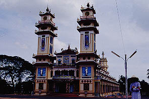
コレ、何だと思いますか。
そう、寺なんですねえ〜。
とはいっても普通の仏教寺院ではなく新興宗教の本山なんですけど。
これがベトナムが世界に誇る珍寺、カオダイ教の本山寺院である。
御覧の通り実に奇妙な建物だ。一見遠目には2つの塔を持っておりノートルダム寺院の様でもあるが、上の方は中国寺院のような造り、さらに2本の塔の間にある部分の屋根は道教寺院の様式だ。さらに細かいところを見ていくとイスラム建築などの様式も混ざっている。
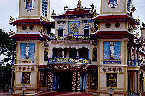
中央の屋根の上には仏像が両脇の2階部分にはキリスト教のレリーフがある。
一体ここは何なんだ、とお思いの方も多いであろうからチョットだけこのカオダイ教の教義というか歴史というかコンセプトみたいなものを超簡単に説明させていただく。あ、勧誘とかじゃないですからねえ〜。
このカオダイ教が立教されたのは1926年。1927年にサイゴン（現ホーチミン市）から現在のタイニンに集団移動してきた。その後急速に信者を増やし、ベトナム戦争時にはタイニンは自治区を形成するまでになった。信者も300万人程に膨れ上がったという。こうした一大宗強勢力にまでなったカオダイ教だがベトナム戦争終了後、社会主義政権にはずいぶんいじめられたらしい。その後、近年になってやっと宗教活動が認められ復興したそうである。
このカオダイの最大の特徴は宗教の混合化である。キリスト、仏教、道教、儒教、ヒンズー教などを統合する世界的な宗教を目指しているそうだ。
というわけで建物も自ずから各宗教のものを色々と合体させているのである。
本堂（と呼んで、いいのだろうか）の建設は1933年から1955年の間。
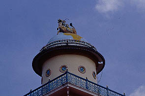 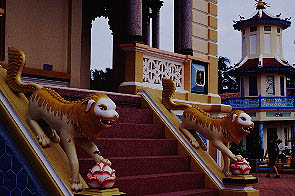
ひとつひとつのパーツは様々な宗教に即したものなのだが強引に合体させているところが素晴らしい。
地球儀の上に麒麟らしき動物が雄叫びをあげている。「カオダイ教、世界奪ったり〜！」の図。
コーヒーにミルクと砂糖を少々、というレベルではなくコーヒーに紅茶とコーラを同量で強引に混ぜ合わせたような勢いがある。
というかカレーにステーキとラーメンをぶち込んでついでに刺身とエスカルゴと・・・具合悪くなって来たのでこの辺でやめときます。
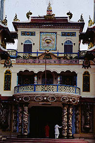 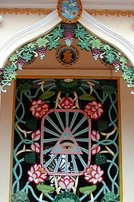
カオダイのシンボルは聖眼と呼ばれる神の目である。本堂の正面や窓などにもこの聖眼がみられる。
これは教祖が修業中に見たという神の目をシンボライズしたもの。
どこかで、しかもついさっき見た事があるような気がして、財布を探してみたら一ドル札の裏に同じものがありました・・・
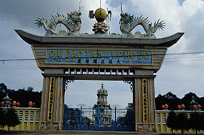
本堂の正面にはオベリスクのような塔や龍の乗った門、西洋風なんだけど何か一寸違う塔などが一直線に並ぶ。
ここは中心線を神聖視しているらしく、本堂正面の広場に入ろうとしたカメラ片手の観光客が信者に注意されていた。
・・・私のことなんですけどね
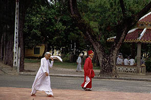
どこからともなく信者が続々と集まって来た。12時からの礼拝のためであろう。
カオダイでは1日4回、集団礼拝が行なわれる。0時6時12時18時の四回なので観光客は12時の礼拝時間に集中するのだ。
早速中に入ってみよう。
入口は正面左右と3カ所ある。正面向かって右手は男性、左手は女性用となっている。と、案内版に書いてあったが観光客は皆シカトして右の入口から入ってました。中央は僧侶専用でそこから入ろうとする観光客は注意されていた。あ、私のことです。すみません。
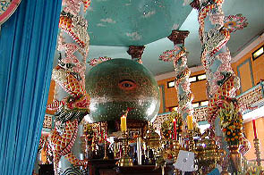 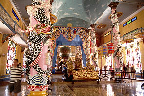
内部は外部のこってりとした闇鍋建築とは裏腹に意外とすっきりしている。
しかし龍の巻き付いた列柱などは見逃せない。
内部の床面は段差を設けて徐々に高くなっており一番奥には8つの柱に囲まれた聖眼が祀られている。
つまり中央線と床面のレベル差から得られる座標軸から宗教的ヒエラルキーを視覚化しているのだろう。真ん中と高いところはエライっつー事ですな。
神様の目は左目である。黒眉黒目で皮膚の色からするとアジア人種なんでしょうか。
観光客は柱の外側を反時計周りに行き、本尊の聖眼の裏をぐるりと回って帰って来るというもの。
中央部分には立ち入れないので注意していたら背後で他の観光客が注意されていた。あ、私の愚息だ・・・
教会のようなヴォ−ルト天井は水色にペイントされており空をイメージしている。カオダイとは「高台」のことで、屋根のない高い建物のことだそうだ。従ってここも「本当は天井は無いんですよお〜」と言いたいのだろう。
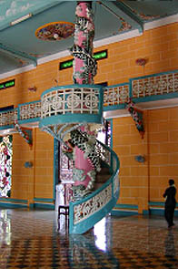
列柱の中程に左右2本だけ螺旋階段の付いた柱がある。これは説教台のようなものと思われるが龍がチョット苦しそう。
などとうろうろしていると信者の方に階段の方へ追いやられる。
どうやら礼拝の時間らしい。
階段を登り両脇のキャットウォーク状の回廊から下を見下ろすと信者の皆さんが続々入場してくる。
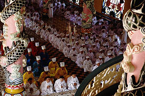 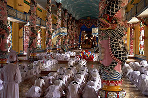
礼拝は生演奏の伴奏と共に始まる。中国風でありインドっぽくもありイスラムっぽくもある妙〜なサウンドに合わせて一斉に
頭を下げたりしている。この辺の光景はイスラム教の礼拝のようだ。
一般の信者は白い服だが僧侶は赤や黄色や青い服を着ている。
これは赤が儒教、青が道教、黄色が仏教の各派の僧侶だというが一つの宗教でそれぞれの宗派の坊さんがいるというのが良く判らない。
つまり宗教を合体させるための宗教なのだろう。
その他にもタイニン省を中心としてカオダイ寺院は数多く存在する。
形は基本的に本山のものと同じだが規模によって色々と省略されている。
中には劣勢遺伝というかコピーに失敗してしまったような物件もあり中々楽しめた。
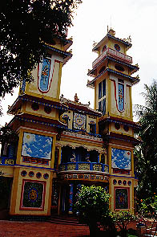 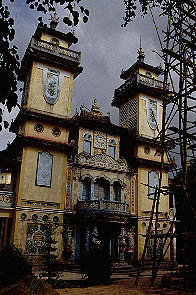
次へいきましょう
越南珍寺劇場
珍寺大道場 HOME